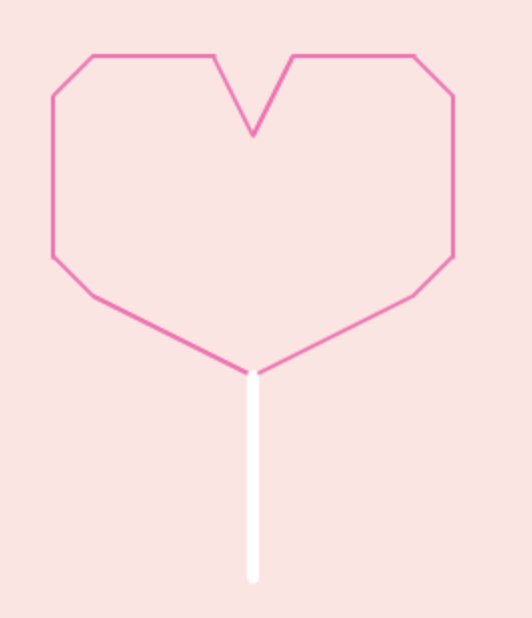
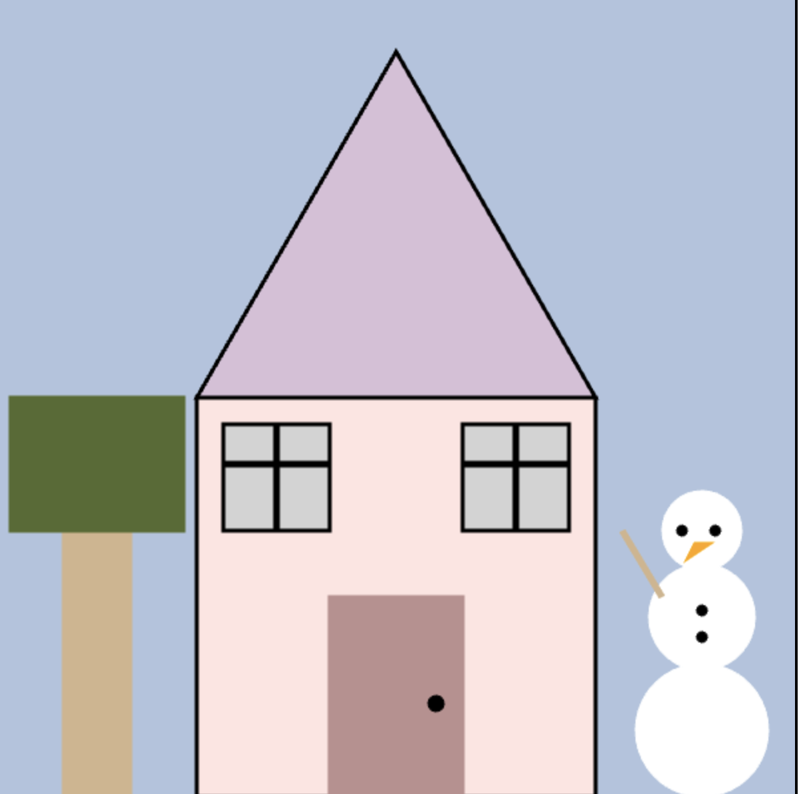

Projects

Summary - In this project, the goal was to create a shape/design using lines and coordinates in Trinket. One challenge was figuring out the coordinates for placing the lines accurately. However, during the process I discovered a helpful feature in Trinket that shows the coordinates when hovering over the mouse. This proved to be a valuable tool for understanding and implementing the correct coordinates. Despite the initial challenge of figuring out the coordinates, the coding itself is clear and concise. I learned about the strokeWeight and stroke functions, which are used to control the line thickness and color. Overall, this project helped me explore creating things on different platforms than the ones I am used to. (Click on picture to see the project)
Summary - In this project the code utilized the input function to prompt the user for the side lengths, converting the input to integers for numerical operations. Next three different areas were calculated: the area of the rectangle (sideA * sideB), the area of the smaller right triangle ((sideA - sideC) * (sideD - sideE - sideB)), and the area of the larger right triangle (0.5 * (sideA - sideC) * sideE). These areas were then summed up to determine the overall room area. Something I struggled with was the math portion of it. I found it difficult to understand how to calculate the sides of the shape.
Summary - In this chatbot program, I created a fashion-oriented chatbot that engages users in a playful and conversational manner, utilizing if statements, user input, and random numbers. The program begins by prompting the user for their name and age. Depending on the user's age, the chatbot playfully responds. Next, the chatbot asks about the user's current mood. The chatbot uses a random module that generates a number between 1 and 3, leading to playful responses. The conversation concludes by asking if there's anything else the user would like to share. Based on the response, the chatbot bids goodbye. This project helped us understand how to use if statements, user input, and random numbers. A challenge I faced was initially deciding on the chatbot's theme, but once I settled on the idea, creating the if-statements and similar components became easier.
Summary - In this Trinket project, we were tasked with creating a representation of a robot. The objective was to design a robot with various features such as a head, eyes, accessories, and facial expressions. The code begins by setting up a canvas and implementing a draw function that continuously updates the background and displays the current mouse coordinates. The robot's head is depicted as a rectangle filled with a light lavender color, and accessories on both the left and right sides contribute to its appearance. Eyes are symmetrically placed on the head, each represented by a black rectangle. Blush elements, lips, and eyebrows add personality to the robot's facial features. Reflecting on the process, I faced a challenging phase in deciding the placement and characteristics of each element, but once the initial concept was established, creating the individual components became more straightforward. It was primarily the coordinates that I struggled with.(Click on picture to see the project)

Summary - In this program, we designed a simple program that prompts the user to specify how many numbers they would like to check. Using a for loop, the program then asks the user to input numbers and determines whether each number is divisible by 3 or not. The modulus operator is used to check for divisibility. Throughout the loop, two count variables, divisible and notdivisible, keep track of the numbers that are divisible by 3 and those that are not. This information is then used to provide feedback to the user. Once the loop concludes, the program outputs the total count of numbers that are divisible by 3 and those that are not. This program helped us to understand the use of loops and conditional statements as well as act as a practical exercise in handling user input, performing calculations, and providing outputs based on specific conditions. Reflecting on the process, there wasn't much I struggled with. I felt this project was straightforward.
Summary - These projects allowed me to blend creativity with coding, translating visual ideas into code. Experimenting with shapes, colors, and arrangements within the Processing environment provided insights into the various ways of creating different shapes. One challenge I faced was determining the placement of facial features and other details. These experiences deepened my understanding of using code as a means of combining art and programming.(Click on Emoji to see the project)


Summary - In this project, the task was to create a house using shapes and colors. The learning focus was on how to manipulate different shapes, layer them, and apply colors to bring a visual concept to life through code. One challenge I encountered was working with coordinates, as it often involved rounding and guessing, making the process time-consuming, especially when adjusting everything. The code for the project creates various shapes to form a house, tree, snowman, and a background. I used different polygons, circles, and lines to achieve the desired image. One key takeaway from the project was gaining experience in creating complex designs through the strategic use of shapes and colors. Despite the initial struggle with coordinates, this project enhanced my understanding of combining creativity with coding, emphasizing the importance of patience when working with shapes and coordinates to achieve visually appealing results. (Click on picture to see the project)
Summary - In this project, I created an animation using SimpleGUI that alternates between a sun and a moon, simulating a day-night cycle. The animation includes various elements such as a stick figure, a balloon, clouds, buildings, and changing backgrounds to represent different times of the day. The sun is drawn with multiple shapes representing its features, including a smile, eyes, blush, and a playful appearance. It moves horizontally from left to right, creating the illusion of sunrise. The moon, on the other hand, has craters, eyes, and a mouth. It also moves horizontally from right to left, suggesting the transition to nighttime. The background color changes during the animation to signify different phases of the day. This project provided valuable experience in creating an animation, as it was my first time doing something like this. I initially had a hard time understanding the logic behind making it move. However, once I was able to troubleshoot and try out different things, I found a way to get the shapes to move in the way I wanted them to, creating the animation.
Summary - This project was an interactive text-based game using the turtle module. The game presents the player with a narrative where they make choices that impact the story's outcome, creating different paths and endings. The story begins with an eerie abandoned hospital, and the player has a camera for their YouTube channel. The program then prompts the player to make choices. I used turtle graphics to change the background images according to the player's choices. This project provided a hands-on experience in making user inputs affect the direction the program will go. For the most part, the coding for the project was simple and straightforward. However, it was difficult to decide on one idea for the story.